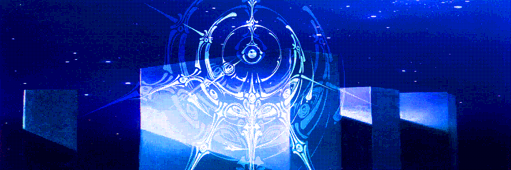
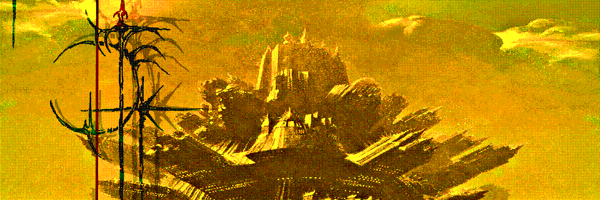

O mundo se refez em silêncio e estranheza. A vida, inquieta, moldou-se em corpos híbridos de carne e feitiço, respirações de animal e de sonho, instintos que desafiam qualquer lógica. A cada era, uma mão invisível redesenhou as regras da existência — mas desta vez, a mudança não trouxe renovação. Trouxe um abismo.
A MORTE foi apagada.
Eternidade tornou-se maldição. As árvores crescem sem repouso, raízes esmagando raízes até que nada mais caiba no solo. Corpos humanos se alongam em tempo interminável, carregando doenças que não cedem, cicatrizes que não fecham, dores que não encontram trégua. Guerras se arrastam sem vencedor, prisioneiros gritam por séculos, e a loucura se multiplica como uma praga que jamais encontra cura.
Nada perece. Nada adormece. Nada parte.
E todos se lembram.
Pois o esquecimento não acompanha a eternidade — cada olhar carrega a memória viva de que o fim não existe mais.
As cidades, cheias até o osso, afundam em sua própria superpopulação. Crianças nascem em corredores abarrotados, famintas de um futuro que nunca chega. O ar carrega o peso de incontáveis vozes, de séculos sobrepostos de sofrimento que se recusam a silenciar.
Entre este excesso sem saída ergue-se a Legião Anima, irmandade de híbridos e visionários que acredita haver ainda um caminho: atravessar ruínas esquecidas, enfrentar reinos onde a própria realidade se contorce, e alcançar a origem da força que escreve e reescreve a vida.
Se sua jornada triunfar, a MORTE poderá retornar — e com ela, o descanso, a paz, o silêncio.
Mas cada revelação cobra um preço, e talvez o fardo da eternidade não seja o maior dos horrores.
Expedição Gênese é a busca pela última fronteira, a travessia final em direção ao primeiro começo.
Uma força para além do nosso horizonte, venha comigo.